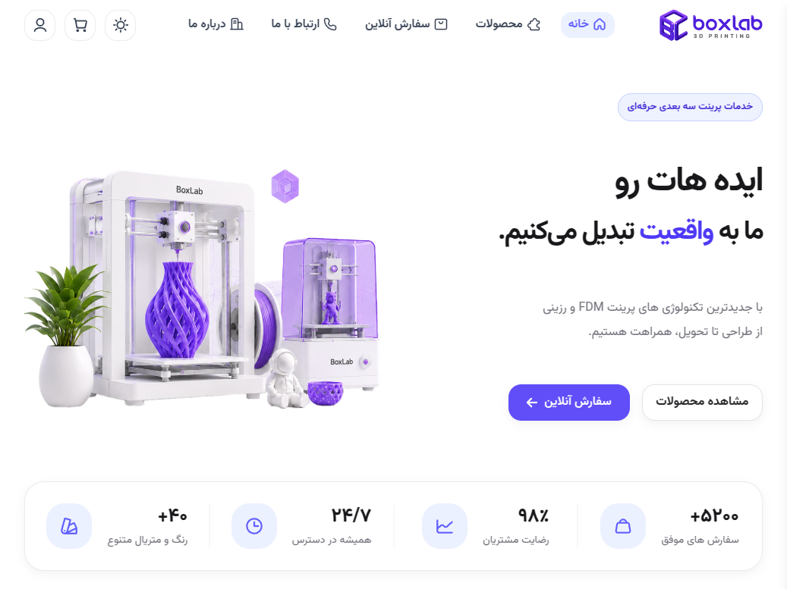
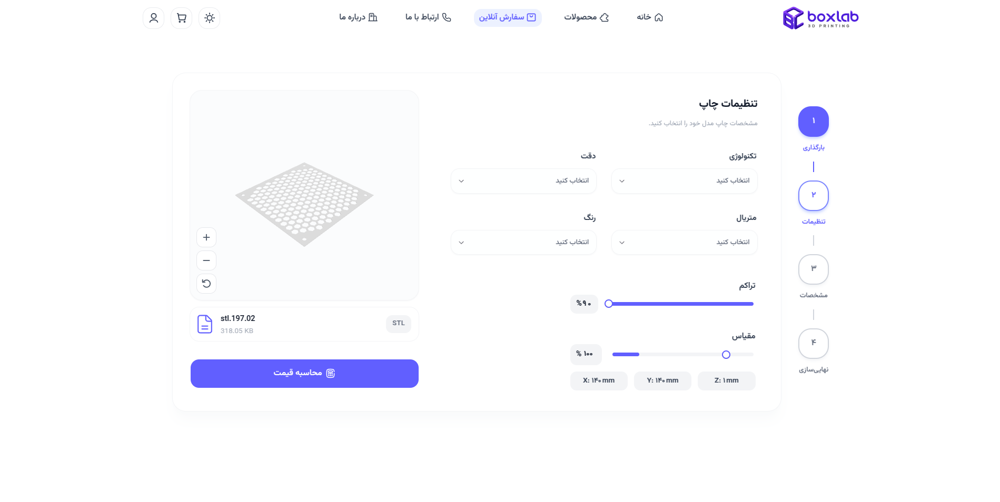
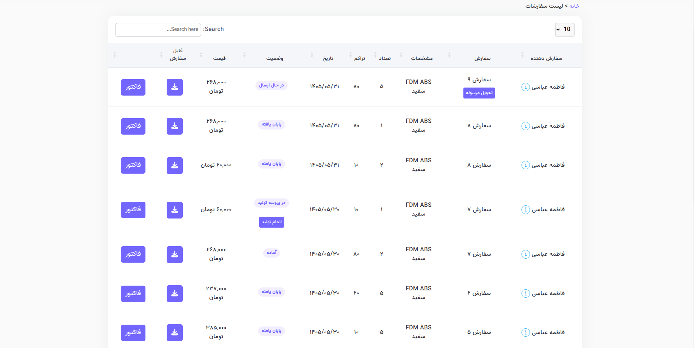

پلتفرم خدمات پرینت سهبعدی
یک پلتفرم جامع برای ارائه و مدیریت خدمات پرینت سهبعدی که فرآیند ثبت سفارش، دریافت فایل، محاسبه هزینه، مدیریت سفارش و فرآیند تولید را در یک سیستم یکپارچه پوشش میدهد.
پلتفرم مدیریت خدمات پرینت سهبعدی
این پروژه یک سامانه برای ارائه خدمات پرینت سهبعدی و مدیریت فرآیند سفارش از مرحله دریافت فایل تا آمادهسازی و تحویل سفارش است.
کاربر میتواند مدل سهبعدی خود را در سامانه بارگذاری کرده و مشخصات موردنظر برای چاپ را انتخاب کند. سیستم با استفاده از اطلاعات مدل و تنظیمات چاپ، اطلاعات موردنیاز برای برآورد هزینه و زمان تولید را پردازش میکند.
در سمت مدیریت نیز مجموعهای از ابزارها برای مدیریت کاربران، سفارشها، دستگاهها، مواد مصرفی، وضعیت تولید و فرآیند آمادهسازی سفارش در نظر گرفته شده است.
قابلیتهای اصلی سیستم
مدیریت فایلهای سهبعدی
دریافت فایلهای STL و پردازش اطلاعات مدل برای استفاده در فرآیند سفارش و محاسبه هزینه چاپ.
محاسبه قیمت چاپ
محاسبه هزینه بر اساس نوع پرینتر، ماده مصرفی، زمان چاپ، حجم مدل و پارامترهای تعریفشده برای خدمات.
مدیریت سفارش
ایجاد سفارش و مدیریت وضعیت آن در مراحل مختلف از ثبت سفارش تا آمادهسازی و تحویل.
مدیریت کاربران
ثبتنام، احراز شماره تلفن، مدیریت پروفایل و کنترل دسترسی کاربران بر اساس نقشهای مختلف.
کیف پول و پرداخت
مدیریت اعتبار کاربران و ثبت تراکنشهای مالی مرتبط با سفارشها و پرداختها.
مدیریت تولید
مدیریت مراحل تولید، صف سفارشها، پرینترها و فرآیند آمادهسازی سفارش برای ارسال.
از فایل سهبعدی تا سفارش
فرآیند اصلی سامانه از دریافت مدل سهبعدی شروع شده و در چند مرحله به ثبت و مدیریت سفارش منتهی میشود.
کاربر فایل سهبعدی خود را در سامانه بارگذاری میکند.
نوع ماده، کیفیت چاپ، درصد پرشدگی و سایر تنظیمات مشخص میشوند.
سیستم زمان و هزینه تقریبی تولید را محاسبه میکند.
سفارش ثبت شده و وارد فرآیند مدیریت و تولید میشود.
سفارش در فرآیند تولید قرار گرفته و پس از آماده شدن برای ارسال آماده میشود.
بخشهای مدیریتی سامانه
ساختار مدیریت پروژه به صورت ماژولار طراحی شده تا هر بخش از فرآیند کاری بتواند به صورت مستقل مدیریت شود.
تکنولوژی و ساختار فنی
Backend پروژه با Django توسعه داده شده و APIهای موردنیاز Frontend با Django REST Framework پیادهسازی شدهاند. رابط کاربری اصلی با React توسعه داده شده و پنل مدیریت داخلی با Django Templates پیادهسازی شده است.
برای پردازش فایلهای سهبعدی از Trimesh و برای استخراج اطلاعات فرآیند Slicing از PrusaSlicer استفاده شده است.
نمایی از بخشهای پروژه
بخشی از رابط کاربری و پنلهای مدیریتی سامانه.


